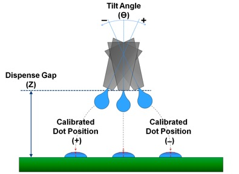

Tech Briefs
July 2015
Nordson ASYMTEK launches a programmable tilt + rotate dispenser
by Debra Vogler, Senior Technical Editor

Garrett Wong, Product Manager, Nordson ASYMTEK
Nordson ASYMTEK recently announced a new Programmable Tilt + Rotate 5-Axis Fluid Dispenser that enables a jet to dispense using 5 axes of automated control instead of only 3 axes. The company noted that additional X and Y tilt modes enable dispensing from a vertical position and at varying tilt angles along all four sides of a device, and up the side of a substrate or component. This capability is particularly important for 3D packaging applications.
According to the company, for 3D IC applications, applying fluid for capillary underfill of stacked die using conventional vertical dispensing necessitates building up fluid to reach the top of the stack. If there are variations in the height of the stack, the defined fluid volume might end up short of the top layer or overflow the top. The Programmable Tilt + Rotate feature enables the user to determine the height of the die stack's top layer and then dispense fluid along all four sides of the stack just below the top surface, ensuring that sufficient fluid reaches the top of the stack without overflowing over the top. The company also said that dispensing from the top down can further reduce the amount of excess fluid required with conventional vertical dispensing, thereby reducing the total wet-out distance around the die stack. “When stacking fluid from the bottom up, you need to add additional fluid to get the height profile,” said Garrett Wong, Product Manager at Nordson ASYMTEK. “As such, fluid tends to flow out and underfill in the lower levels of the stack, as well as to the “tongue” away from the die stack (shown in the left image of Figure 1). As this fluid flows out while dispensing, it reduces the overall height of the fluid stack, and therefore can result in more fluid being required to create the target fluid height to reach and flow out to the top of the stack.” Wong also told Chip Scale Review that, by dispensing to the side of the stack at the target dispense height, the user does not need to stack up as much fluid to reach the top of the die stack and get sufficient underfill to that layer (refer to the image on the right in Figure 1). The company noted that using the tilt mode, the jet dispenses up to ±30° with 1° resolution in either the X or Y axis.
According to Wong, wet dispense accuracy is calibrated at the different tilt angles and dispense gap heights, thereby calibrating out the error/inconsistency at the various positions. “Calibrations are performed in all four directions, as well as in the vertical orientations,” Wong told CSR (see Figure 2). “Up to 10 sets of calibrations can be stored and used with each process program, allowing for multiple dispense gaps and tilt angles to be automatically actuated through for different parts and geometries on a single substrate.”
Figure 1: Illustration of underfill flow-out for a 3D die stack

Figure 2: : Illustration of how wet dispense accuracy is calibrated at different tilt angles and dispense gap heights
CSR asked Wong to discuss the technical challenges that had to be addressed to develop solutions to ensure dispensing accuracy. He noted three significant challenges. The first was maintaining the target dispense area for 300mm wafers when factoring in spatial constraints of the platform and motion system. “This was resolved through minimizing the structural design of the system and using the rotational arm to pivot our jet valve to achieve the tilt dispensing in the two axes, as well as intelligently positioning the mounting of the system components to avoid interferences and moving the syringe from a direct mount on the valve to a remote mount in front of the camera,” explained Wong.
The second challenge that had to be addressed was achieving the required dispense accuracy and understanding the sources of error. “We resolved this challenge by reducing the mass of the bracket solution to minimize inertia, as well as implementing software controls and calibrations to remove the sources of wet dispense accuracy errors,” said Wong. “Building the system to work with the globally preferred jet for accurate dispensing, the DispenseJet® DJ-9500, gave us a solid base for achieving target accuracy and precision.”
The last major technical challenge the company tackled was using software automation of the tilt and rotate functions to achieve target cycle times, as well as to ensure safe operation for avoiding damage to the dispenser or substrate parts. Additionally, because of the moving components that are a part of the system, it was also vital to ensure safe operation for the user. The company resolved these issues in the design of both the tilt and rotate mechanisms to allow for maximizing rotational velocities. “Additional controls in the software and hardware limit the system from achieving velocities that could then injure operators in the event that a user bypasses the door safety system and inserts their hand into the system while it is running,” Wong told CSR. “Commanding the tilt and rotate functions to only actuate at the safe Z height further ensures that the system will avoid damage to either the substrate parts or the dispenser.”
 The new Tech News section will be featuring select quotes, commentary, and data based on questions posed to industry technologists by our senior technical editor, Debra Vogler. If your company has significant technical news to announce and you’re invited to participate in these interviews, be prepared to discuss the science behind your latest breakthrough, the R&D challenges that had to be solved along the way, and the industry challenges driving the need for the technology. Send your technology news releases to editor@chipscalereview.com
The new Tech News section will be featuring select quotes, commentary, and data based on questions posed to industry technologists by our senior technical editor, Debra Vogler. If your company has significant technical news to announce and you’re invited to participate in these interviews, be prepared to discuss the science behind your latest breakthrough, the R&D challenges that had to be solved along the way, and the industry challenges driving the need for the technology. Send your technology news releases to editor@chipscalereview.com